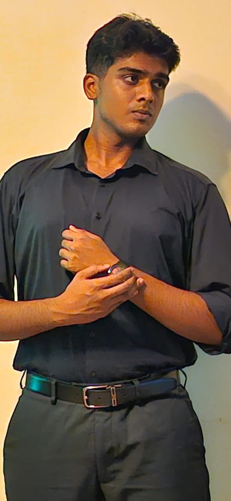

A passionate engineer bridging technology, marketing, and innovation.

P R Matthew is a highly motivated engineering student with a strong interest in software development and cybersecurity. Through academic projects, professional experience, and continuous learning, he has developed both technical and business-oriented skills.
His ability to lead teams, manage clients, communicate effectively, and adapt quickly to new technologies makes him a versatile professional. Matthew believes in continuous growth and actively pursues certifications and practical experiences to stay aligned with industry standards.
Currently in his fourth year of engineering, Matthew aims to secure an internship at a leading technology company — Google, Microsoft, Amazon, or similar — and eventually build impactful digital products that make a real difference.
Fourth-year engineering student with a focus on software development, cybersecurity, and digital innovation. Actively involved in academic projects, technical competitions, and industry certifications to bridge theory with real-world practice.
Completed higher secondary education at a dynamic and inclusive school known for strong academics and character building. Developed a solid foundation in sciences, mathematics, and analytical thinking.
Attended a nurturing institution known for academic excellence and holistic development. Cultivated creativity, leadership qualities, and strong values through modern teaching methods and diverse co-curricular activities.
Secure an internship at a leading technology company such as Google, Microsoft, or Amazon where I can work on real-time projects, collaborate with talented professionals, and gain practical industry experience.
Become a full-stack software engineer who understands both the technology behind a platform and the psychology of its users. Build innovative, accessible, and impactful products that serve millions of people.